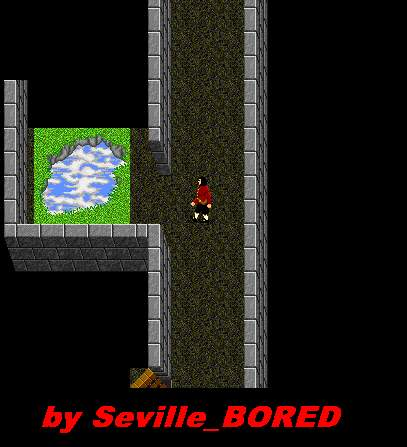
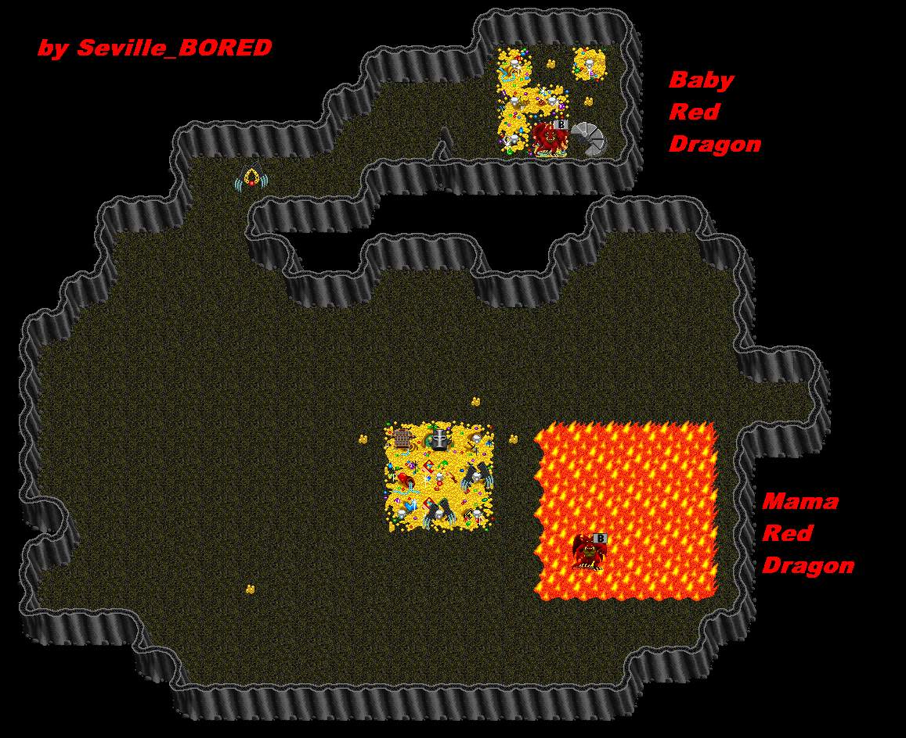

| Mama Red Dragon |
 |
 |
| To reach the Mama RD Lair, go down into the Fate Pool area and blow open/ Door wall and step off the edge. You will fall 2 levels and land in Mama's Lair itself. |
| Back to Nork. |
| Mama Red Dragon casts FireBreath, uses a Claw Attack and has been known to steal IH's. Average damage is about 300. Mama can double prone at times. Baby Red Dragon is similar to Red Dragon by Fisheries. |